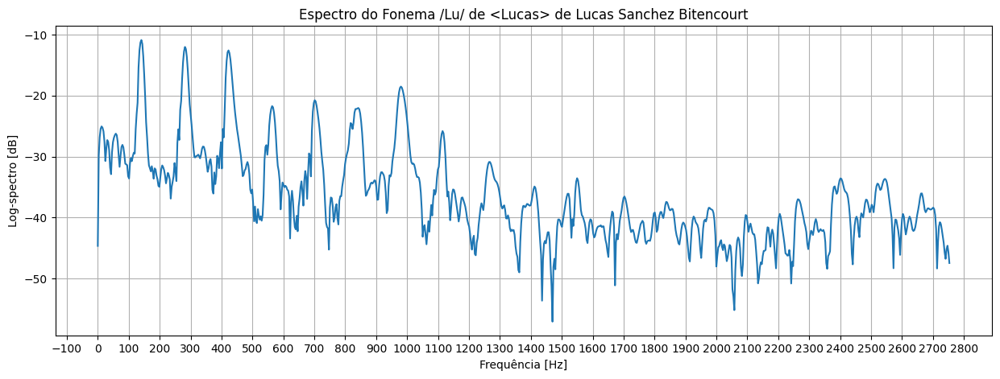
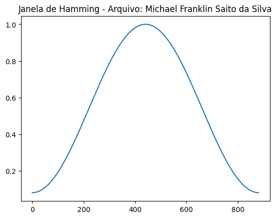

Codificação de Sinais Multimídia
Características Tempo-Frequência da Voz
1. Apresente as gravações (com transcrição) do Nome e RA de cada integrante do grupo.
# MicroECN8000_prataCaio Henrique Falcheti Nunes - RA 11201920936 Lucas Sanchez Bitencourt - RA 11201921617 Michael Franklin Saito da Silva - RA 11201810988 |
# MicroSM57_pretoCaio Henrique Falcheti Nunes - RA 11201920936 Lucas Sanchez Bitencourt - RA 11201921617 Michael Franklin Saito da Silva - RA 11201810988 |
# Microfone do celularMarcela Ceschim Caburlão - RA 11201920483 |
|---|
2. Nos itens abaixo, usar apenas uma gravação (um falante), mas em cada item o falante seja diferente.
i. Apresente uma forma de onda e o espectrograma de toda a “frase1”, para um dos microfones e um dos falantes. Analise as diferenças entre os microfones nas gravações mono da frase.
Falante: Caio Henrique Falcheti Nunes
# MicroECN8000_prata # MicroSM57_preto
- Formas de onda
- Espectrograma

Análise: Percebe-se que, em ambas as gravações, a captação da voz foi bem sucedida, já que é possível notar em ambos os espectogramas, os mesmos pitches produzidos pela fala do aluno. No entanto, no espectograma gerado pelo microfone "prata" (modelo ECN8000), nota-se que, por possuir tons de coloração mais fortes nos pitches, representando uma energia maior, captou a voz do aluno num tom mais alto, quando comparado ao segundo gráfico. Em contrapartida, nota-se também neste espectograma, que o ruído captado também possui energia maior, sendo, então, bem mais perceptível no áudio, quando comparado ao que foi coletado pelo microfone modelo SM57 "preto", que, por consequência, apresenta uma voz num tom mais baixo, porém o áudio em si mais "limpo", ou seja, com pouquíssima interferência de ruído externo.
ii. Busque na web a "frase1" no início da música "Vambora" da Adriana Calcanhoto. Faça o espectrograma do mesmo trecho dela e compare com uma gravação de vocês.
Falante: Michael Franklin Saito da Silva
# MicroECN8000_prata # MicroSM57_preto
Cantora: Adriana Calcanhoto
Análise: Na comparação entre os espectrogramas fica nítido a diferença pela densidade de energia. Devido a música “Vambora” conter instrumento, ajuda no preenchimento da melodia, visivelmente no espectrograma com mais coloração. A quantidade de pitchs também pode ser notada na análise dos espectrogramas, onde na música, contem mais pitchs do que nos áudios gravados pelos microfones.
iii. Apresente uma forma de onda e o espectrograma de todo “verso1”, para o outro microfone e outro falante diferente do item anterior. Analise as diferenças entre os microfones nas gravações mono deste verso.
Falante: Lucas Sanchez Bitencourt
# MicroECN8000_prata # MicroSM57_preto
- Formas de onda

- Espectrograma

Análise: Na comparação entre o primeiro espectrograma e o segundo fica evidente a diferença observada ao se escutar os dois aúdios, pois no primeiro pode se perceber uma voz mais "forte" do que no segundo, o que é evidencidado na coloração em tons de rosa mais forte no primeiro espectrograma. Os pitchs também ficam consequetemente mais evidentes, representados pelas ranhuras em um tom amarelado na base do espectrograma. Em contrapartida o segundo aúdio e espectrograma são mais "limpos", apresentando menos ruídos externos em relação ao primeiro áudio e espectrograma.
iv. Apresente as gravações e os espectrogramas da “Música1”.
# MicroECN8000_prata
# MicroSM57_preto
# Estéreo/Cruzado
3. Em face das gravações efetuadas, como vocês definem o conceito de Prosódia? Qual a diferença entre voz falada normal, em verso, ou em música neste conceito?
Resposta: A prosódia se refere ao padrão rítmico, entonação e variações na qualidade da voz que são usados na linguagem falada e na música para transmitir significado e emoção. Ela desempenha um papel fundamental na comunicação oral e na interpretação de mensagens, e sua aplicação pode variar entre fala normal, verso e música.
Na fala normal: Na fala normal, a prosódia inclui elementos como entonação, ritmo, volume, duração das sílabas e pausas. A entonação é particularmente importante para transmitir emoções e intenções na comunicação oral. Por exemplo, uma pergunta geralmente tem uma entonação ascendente, enquanto uma afirmação tem uma entonação descendente. A prosódia na fala normal também pode variar de acordo com o contexto, a cultura e a ênfase que o falante deseja dar a certas palavras ou frases.
No verso (poema): A prosódia no contexto poético, especialmente no verso, refere-se ao padrão rítmico e melódico da linguagem. A métrica e o ritmo são elementos essenciais da prosódia poética. Em poemas, as palavras são muitas vezes selecionadas com base em seu som e ritmo, criando um fluxo musical. A repetição de padrões de acento e ritmo, bem como esquemas de rimas, são aspectos importantes da prosódia poética. Isso cria uma experiência sonora e estilística única em comparação com a fala normal.
Na música: Na música, a prosódia se refere ao uso da voz de uma maneira que complementa a melodia e a harmonia da composição. Cantores ajustam suas vozes para se encaixar no contexto musical, usando entonações e dinâmicas para transmitir emoção e dar vida à letra da música. A prosódia musical pode incluir variações na intensidade, no vibrato e no uso de ornamentações vocais, tudo com o objetivo de aprimorar a expressão emocional da música. É importante notar que, na música, a prosódia é moldada de acordo com a estrutura da canção e a intenção do compositor.
4. Complementar segundo as orientações da parte do relatório indicadas no notebook fornecido.
# Caio Henrique Falcheti Nunes - Link para notebook [click aqui]
Análise do nome falado: /Caio Henrique Falcheti Nunes /
|
|
Frequência de Amostragem: 22050 Hz Frequência de Amostragem - Refere-se à taxa na qual um sinal analógico é discretizado ou amostrado para ser representado em formato digital. Em outras palavras, é o número de amostras de um sinal analógico que são coletadas em um determinado período de tempo. Tamanho do Segmento: 882 Tamanho do Segmento - Refere-se ao número de amostras de áudio processadas em cada janela de tempo. |
|---|
|
Janela de Hamming 
|
Energia de Tempo Curto 
|
|---|
Espectrograma
Determinação do Pitch
|
Trecho (1) analisado: \"Ca\" de \"Caio\" |
Trecho (2) analisado: \"Nu\" de \"Nunes\" |
|---|
O Período de Pitch (T0) será o intervalo entre picos sucessivos:
• Para o trecho (1) - 7,3 ms. / Para o trecho (2) - 8,3 ms.
A Frequência Fundamental (f0) será o inverso do periódo de Pitch:
• Para o trecho (1) - 136,98 Hz. / Para o trecho (2) - 120,48 Hz.
|
Espectro do Fonema: \"Ca\" de \"Caio\" |
Espectro do Fonema: \"Nu\" de \"Nunes\" |
|---|
# Lucas Sanchez Bitencourt - para notebook [click aqui]
Análise do nome falado: / Lucas Sanchez Bitencourt /
|
|
Frequência de Amostragem: 22050 Hz Frequência de Amostragem - Refere-se à taxa na qual um sinal analógico é discretizado ou amostrado para ser representado em formato digital. Em outras palavras, é o número de amostras de um sinal analógico que são coletadas em um determinado período de tempo. Tamanho do Segmento: 882 Tamanho do Segmento - Refere-se ao número de amostras de áudio processadas em cada janela de tempo. |
|---|
|
Janela de Hamming 
|
Energia de Tempo Curto |
|---|
Espectrograma
Determinação do Pitch
|
Trecho (1) analisado: \"Lu\" de \"Lucas\" |
Trecho (2) analisado: \"Bi\" de \"Bitencourt\" |
|---|
O Período de Pitch (T0) será o intervalo entre picos sucessivos:
• Para o trecho (1) - 7,2 ms. / Para o trecho (2) - 7 ms.
A Frequência Fundamental (f0) será o inverso do periódo de Pitch:
• Para o trecho (1) - 138,89 Hz. / Para o trecho (2) - 142,86 Hz.
|
Espectro do Fonema: \"Lu\" de \"Lucas\"  |
Espectro do Fonema: \"Bi\" de \"Bitencourt\" |
|---|
# Marcela Ceschim Caburlao - Link para notebook [click aqui]
Análise do nome falado: / Marcela Ceschim Caburlão /"

|
Frequência de Amostragem: 22050 Hz Frequência de Amostragem - Refere-se à taxa na qual um sinal analógico é discretizado ou amostrado para ser representado em formato digital. Em outras palavras, é o número de amostras de um sinal analógico que são coletadas em um determinado período de tempo. Tamanho do Segmento: 882 Tamanho do Segmento - Refere-se ao número de amostras de áudio processadas em cada janela de tempo. |
|---|
|
Janela de Hamming |
Energia de Tempo Curto |
|---|
# Michael Franklin Saito da Silva - Link para notebook [click aqui]
Análise do nome falado: / Michael Franklin Saito da Silva /
|
|
Frequência de Amostragem: 22050 Hz Frequência de Amostragem - Refere-se à taxa na qual um sinal analógico é discretizado ou amostrado para ser representado em formato digital. Em outras palavras, é o número de amostras de um sinal analógico que são coletadas em um determinado período de tempo. Tamanho do Segmento: 882 Tamanho do Segmento - Refere-se ao número de amostras de áudio processadas em cada janela de tempo. |
|---|
|
Janela de Hamming

|
Energia de Tempo Curto |
|---|
Espectrograma
Determinação do Pitch
|
Trecho (1) analisado: \"Mi\" de \"Michael\" |
Trecho (2) analisado: \"Sai\" de \"Saito\" |
|---|
O Período de Pitch (T0) será o intervalo entre picos sucessivos:
• Para o trecho (1) - 8,8 ms / Para o trecho (2) - 8,3 ms.
A Frequência Fundamental (f0) será o inverso do periódo de Pitch:
• Para o trecho (1) - 113 Hz / Para o trecho (2) - 120 Hz.
|
Espectro do Fonema: \"Mi\" de \"Michael\" |
Espectro do Fonema: \"Sai\" de \"Saito\" |
|---|
Referências
[1] McLOUGUHLIN, I., “Applied Speech and Audio Processing: with MATLAB Examples”, Cambridge, 2009, Capítulo 5 “Speech Communications”.
[2] MINAMI, M., Capítulo 4 - Aparelho Fonador Humano e Processamento Digital de Voz, UFABC 2018.